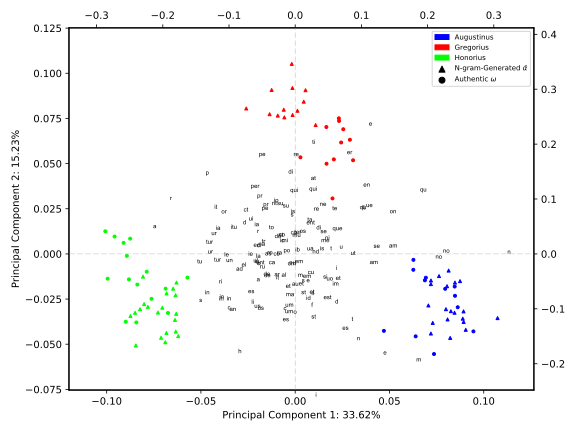
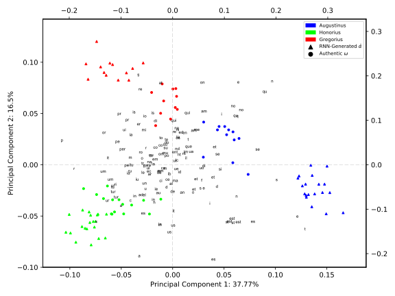
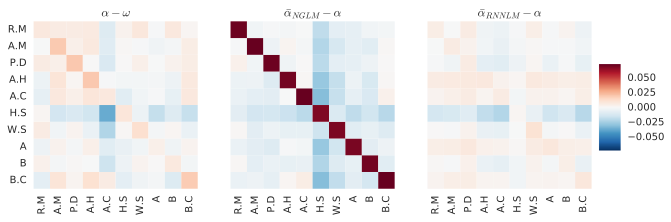

“Algorithmic” definition of style
Style is whatever textual properties an algorithm might use in order to successfully attribute a text to its actual author, without considering whether the properties discovered by the algorithm are stylistic in a narrower sense.
\(P(w_1, w_2, ..., w_n) = P(w_1|eos) * \prod_{i=1}^n P(w_{i+1}|w_1, ..., w_{i})\)
\(P(w_t) = P(w_t|w_{t-n}, w_{t-n-1)}, ..., w_{t-1})\)
Embedding + Hidden RNN Layer + Output Layer + Softmax
Maximize comparability of authentic and generated text
Procedure to create maximally-comparable semi-authentic sets
Model definition
| Parameter | Value |
|---|---|
| Embedding size | 24 |
| RNN Cell | LSTM |
| Hidden size | 200 |
| Hidden Layers | 2 |
Training
| Parameter | Value |
|---|---|
| Batch size | 50 |
| Optimizer | Adam (default params) |
| Learning rate | 0.001 |
| Gradient norm clipping | 5.0 |
| Dropout | 0.3 (RNN output) |
| Epochs | 50 |
Validation perplexity: 4.015 (± 0.183)
| Parameter | Grid values |
|---|---|
| Max-features | 5,000; 10,000; 15,000; 30,000 |
| C | 1; 10; 100; 1,000 |
5-fold cross-validated scores per experiment
| Source | Experiment | F1 | P | R |
| Real | < α,ω > | 0.833 | 0.818 | 0.869 |
| < ω,α > | 0.811 | 0.795 | 0.853 | |
| NGLM | < α,ω > | 0.706 | 0.744 | 0.750 |
| < ω,α > | 0.837 | 0.811 | 0.881 | |
| RNNLM | < α,ω > | 0.635 | 0.701 | 0.658 |
| < ω,α > | 0.724 | 0.778 | 0.775 | |
SVM uses very local features, NGLM reproduces very well the local distribution
DOC-LEVEL PCA: NGLM (150 most-freq ngrams doc-representation)
DOC-LEVEL PCA: RNNLM (150 most-freq ngrams doc-representation)
LEXICAL OVERLAP: Mean-normalized ngram Jaccard-similarity across authors.
Character-level

LEXICAL OVERLAP: Mean-normalized Jaccard-similarity on author ngrams
Word-level
\(<\alpha+\bar{\alpha}, \omega>\)
| Source | Experiment | F1 | P | R |
| Real | < α,ω > | 0.833 | 0.818 | 0.869 |
| < ω,α > | 0.811 | 0.795 | 0.853 | |
| NGLM | < α + α,ω > | 0.814 | 0.809 | 0.850 |
| < α,ω > | 0.706 | 0.744 | 0.750 | |
| < ω,α > | 0.837 | 0.811 | 0.881 | |
| RNNLM | < α + α,ω > | 0.872 | 0.878 | 0.892 |
| < α,ω > | 0.635 | 0.701 | 0.658 | |
| < ω,α > | 0.724 | 0.778 | 0.775 | |
-> The long-term dependencies prove beneficial (not redundant).
-> Generative distribution is closer to the original distribution.